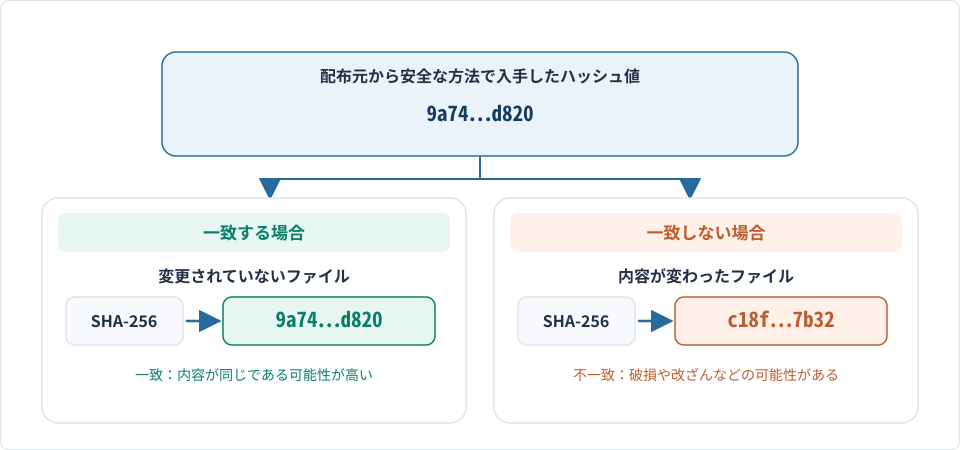
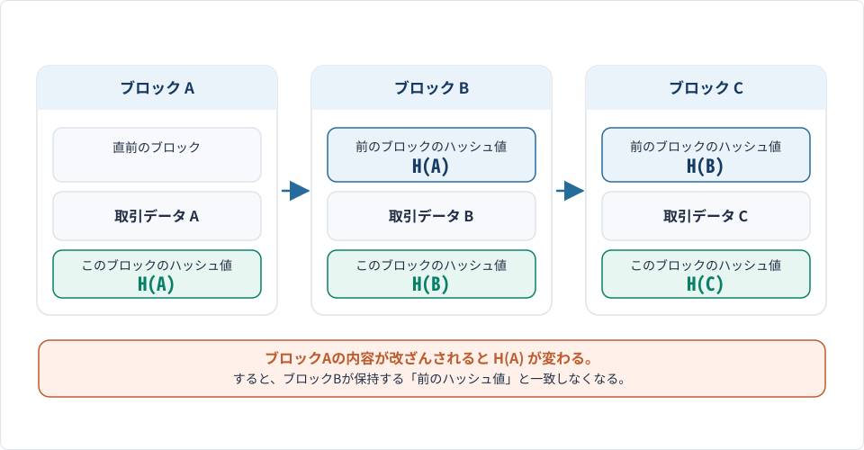
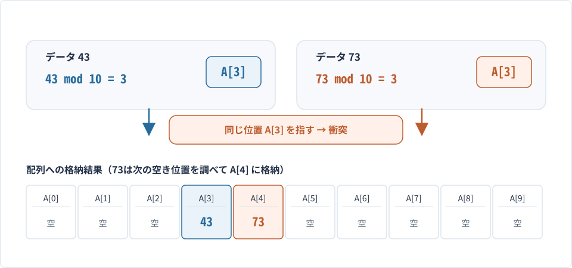

送信者が公開したハッシュ値と、受信したファイルから計算したハッシュ値が一致した。この結果から主に判断できることはどれか。
- 0
ファイルの著作権者
- 1
ファイルの圧縮率
- 2
ファイルが改ざんされていない可能性
- 3
ファイルを開くためのパスワード
解答・解説を確認
正解2．ファイルが改ざんされていない可能性
解説
ハッシュ値はデータから計算される短い値で、元データが少し変わると値も変わります。したがって、改ざん検出に利用できます。
- 出典
- 情報セキュリティマネジメントR5公開問題 問5（改題）
TERM GUIDE · SECURITY
ハッシュ値とは、データに一定の計算を行って得られる値です。この計算に使う規則や仕組みをハッシュ関数といいます。
ハッシュ関数は、文字列、数値、画像、ファイルなど、さまざまなデータに適用できます。同じハッシュ関数を使えば、同じデータからは必ず同じハッシュ値が得られます。
ハッシュ値は、主に次のような目的で利用されます。
これらの用途では、ハッシュ関数に求められる性質が異なります。特に、情報セキュリティで使用するものを暗号学的ハッシュ関数といいます。
ハッシュ関数には、次のような基本的な性質があります。
ハッシュ関数による計算結果は、入力したデータによって決まります。同じハッシュ関数に同じデータを入力すれば、何度計算しても同じハッシュ値になります。
ハッシュ関数では、多くの種類のデータを、限られた範囲の値に対応させます。
そのため、異なるデータから同じハッシュ値が得られることがあります。この現象を衝突といいます。
例えば、整数を10で割った余りをハッシュ値とする場合、13と23はいずれも余りが3になります。
13 mod 10 ＝ 3
23 mod 10 ＝ 3
このように、異なる入力から同じハッシュ値が得られることを衝突といいます。ここで、modは割り算の余りを求める演算を表します。
ハッシュ関数には、割り算の余りを利用するような単純なものもあれば、複雑な計算を行う暗号学的ハッシュ関数もあります。
単純なハッシュ関数は、配列の格納位置を求める場合などに利用されます。一方、ファイルの改ざん検出などでは、意図的に衝突を起こすことが難しい、安全性の高い暗号学的ハッシュ関数が必要になります。
情報セキュリティでは、SHA-256などの暗号学的ハッシュ関数が利用されます。
暗号学的ハッシュ関数には、次のような特徴があります。
例えば、SHA-256では、入力したデータの長さにかかわらず、256ビットのハッシュ値が得られます。
256ビットは16進数で64桁に相当します。ファイルが数KBでも数GBでも、得られるハッシュ値の長さは同じです。
暗号学的ハッシュ関数では、元のデータが1ビットだけ変わった場合でも、ハッシュ値は通常、大きく異なる値になります。
この性質は、ファイルの一部が書き換えられた場合などに、その変化を検出するために役立ちます。
安全な暗号学的ハッシュ関数は、ハッシュ値だけから元のデータを求めることが実用上困難になるように設計されています。
異なるデータから同じハッシュ値が得られる衝突は、理論上避けられません。しかし、安全な暗号学的ハッシュ関数では、衝突するデータの組合せを見つけることが非常に難しくなるように設計されています。
このような性質を利用することで、ファイルの内容を比較したり、改ざんを検出したりできます。
情報セキュリティの重要な要素には、機密性・完全性・可用性があります。
このうち、ハッシュ値の照合が主に関係するのは完全性です。
完全性とは、情報が不正に変更されたり、破壊されたりしていない状態が保たれていることです。
例えば、ソフトウェアの配布元が、ダウンロード用ファイルとともに正しいハッシュ値を公開している場合を考えます。
利用者は、ダウンロードしたファイルから同じハッシュ関数でハッシュ値を計算し、配布元が公開した値と比較します。
ファイルの内容が配布元のものと同じである可能性が非常に高いと判断できます。
ただし、ハッシュ値の衝突が理論上起こり得るため、必ずしも一致を保証するわけではありません。
ファイルの内容が異なっていると判断できます。
通信中のデータの破損、保存時の異常、第三者による改ざんなどが考えられます。そのため、ファイルを実行せず、入手経路を確認して再取得するなどの対応が必要です。
なお、ハッシュ値を比較する際には、比較対象となる正しいハッシュ値を信頼できる方法で入手することが重要です。
攻撃者がファイルと公開ハッシュ値の両方を書き換えた場合、単純に値を照合するだけでは不正を発見できないことがあります。

デジタル署名は、データの改ざんを検出し、署名に使用された秘密鍵の持ち主を確認するための仕組みです。
デジタル署名には、暗号学的ハッシュ関数と公開鍵暗号方式などの技術が利用されます。
一般的なデジタル署名の処理では、送信者は送信するデータからハッシュ値を計算し、自分の秘密鍵を使って署名を作成します。
受信者は、送信者の公開鍵を使って署名を検証します。この検証では、受信したデータから計算したハッシュ値などを利用し、署名がそのデータに対して正しく作成されたものかを調べます。
署名の検証が成功すれば、署名後にデータが変更されていないことと、対応する秘密鍵を持つ者が署名したことを確認できます。
一方で、その公開鍵が本当に送信者本人のものであるかについては、電子証明書などによって確認する必要があります。
ブロックチェーンは、取引などの記録をまとめた「ブロック」を、順序を保ちながら鎖のようにつなげて管理する技術です。
一般的なブロックチェーンでは、各ブロックに、取引データなどとともに直前のブロックのハッシュ値などが記録されます。
例えば、ブロックA、B、Cが順番につながっている場合、ブロックBにはブロックAのハッシュ値が、ブロックCにはブロックBのハッシュ値が記録されます。
このとき、過去のブロックAの内容が書き換えられると、ブロックAのハッシュ値が変化するため、ブロックBに記録されている値との整合性が失われます。
このように、ハッシュ値を利用してブロック同士を関連付けることにより、過去の記録の改ざんを検出しやすくしています。
さらに、複数のコンピュータで記録を共有し、記録の正しさを確認する仕組みなどと組み合わせることで、不正な書き換えを難しくしています。

ハッシュ値は情報セキュリティだけでなく、データの格納や検索にも利用されます。
データの値からハッシュ関数によって格納位置を求め、その位置にデータを保存する仕組みをハッシュ表（ハッシュテーブル）といいます。
例えば、10個の要素をもつ配列A[0]～A[9]に、整数のデータを格納する場合を考えます。
ハッシュ関数を、
h(k) ＝ k mod 10
とすると、整数kを10で割った余りが格納位置になります。
例えば、16は10で割った余りが6なので、A[6]に格納します。43は余りが3なので、A[3]に格納します。
この方法では、検索したいデータから格納位置を直接計算できるため、先頭から順番に探す方法と比べて、効率よく検索できる場合があります。
この方法では、異なるデータから同じ格納位置が求められることがあります。
例えば、43と73はいずれも10で割った余りが3なので、どちらもA[3]に格納しようとします。
このような衝突に対応するためには、別の格納位置を調べるなどの工夫が必要になります。

ハッシュ値を理解するときは、特に次の点に注意する必要があります。
また、ハッシュ値は、データの著作権者、圧縮率、ファイルのパスワードなどを直接表すものではありません。
ハッシュ値とは、データから一定の規則で計算される値であり、その性質を利用して、データの完全性の確認、同一内容のファイルの検索、効率的なデータの格納や検索など、さまざまな処理を実現するものです。
EXAMPLE
ファイルの著作権者
ファイルの圧縮率
ファイルが改ざんされていない可能性
ファイルを開くためのパスワード
正解2．ファイルが改ざんされていない可能性
ハッシュ値はデータから計算される短い値で、元データが少し変わると値も変わります。したがって、改ざん検出に利用できます。
PRACTICE